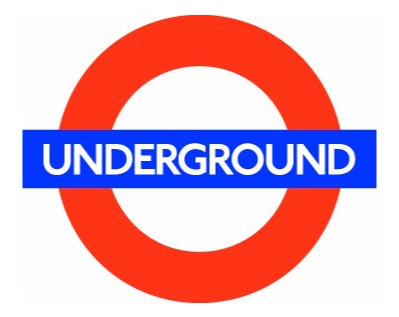
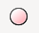
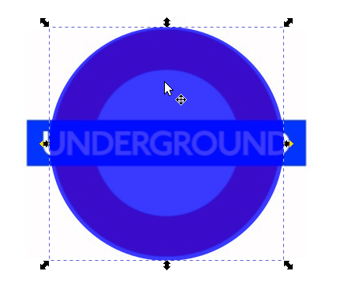
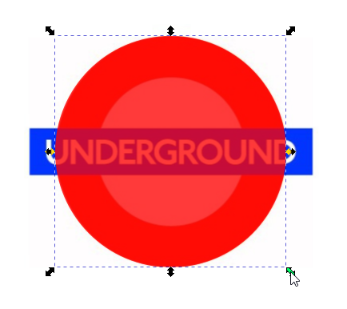
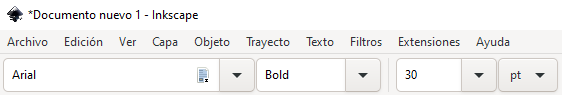
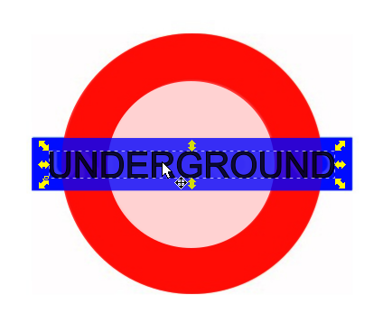
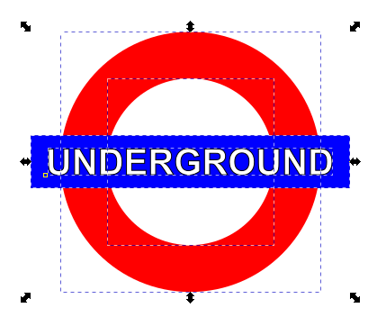
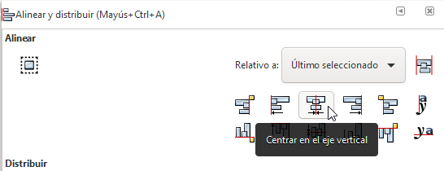
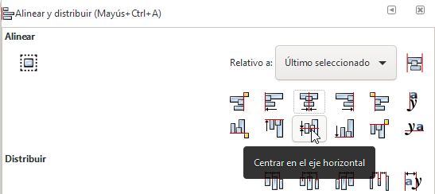
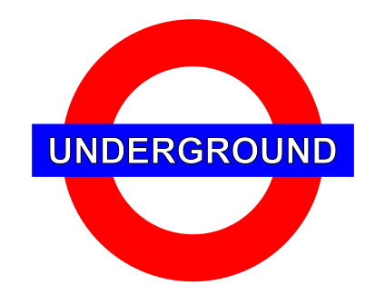

1. Logotipo Underground¶
En este ejercicio veremos como usar la alineación vertical y horizontal para colocar los elementos de la imagen perfectamente centrados.
Primero abrimos un nuevo documento con Inkscape.
A continuación copiamos el siguiente logo en formato bitmap dentro de la página de Inkscape para que nos sirva de base.
Ahora crearemos un círculo con el botón de herramientas para dibujar círculos y elipses .
Para asegurarnos de que el círculo es perfecto y no dibujamos una elipse, pulsaremos la tecla control
 mientras arrastramos el ratón.
mientras arrastramos el ratón.

Ahora vamos a hacer transparente nuestro nuevo círculo para poder ver a través de él y así ajustar su tamaño al tamaño de la imagen de tipo bitmap que hay debajo.
En el menú escogemos la opción
Objeto... Relleno y borde.... a la derecha se abrirá el cuadro de diálogo en el que vamos a cambiar el canal Alfa (opacidad) al nivel 77.
Nuestro círculo se verá así:
El circulo todavía no tiene el mismo tamaño que la imagen que nos sirve de base, por lo que cambiaremos su tamaño moviendo los tiradores (flechas negras) con el ratón mientras pulsamos la tecla control
 para que el círculo no se convierta en una elipse.Por último pulsamos en la barra inferior de colores, el color rojo para que cambie el color de relleno de nuestro círculo exterior.
Una vez creado un círculo rojo, seguimos el mismo procedimiento para crear un círculo blanco que colocaremos encima del anterior.
Recuerda pulsar la tecla control
a la hora de dibujar
el círculo y a la hora de ajustar su tamaño.
Si en algún momento necesitamos mover alguno de los dibujos, tendremos que pulsar el botón de seleccionar
 y luego podremos
mover la imagen con el ratón.
y luego podremos
mover la imagen con el ratón.Ahora crearemos un rectángulo azul con la herramienta de crear cuadrados y rectángulos
 .
.
Cambiamos el color a azul para que coincida con el logotipo inferior.
Con la herramienta texto
 pinchamos con el ratón sobre
el lugar en el que queremos que apareza el texto y escribimos la
palabra UNDERGROUND.
pinchamos con el ratón sobre
el lugar en el que queremos que apareza el texto y escribimos la
palabra UNDERGROUND.En la barra superior podemos seleccionar para nuestro texto las opciones de tipo de letra (Arial Bold) y tamaño (30 puntos).
Con el ratón movemos el texto para que quede centrado en el rectángulo.
Por último cambiamos el color del texto a blanco.
Hasta ahora hemos colocado los dibujos y el texto en su sitio de manera aproximada, pero en dibujo vectorial esto no es suficiente. Para asegurarnos de que los dibujos están correctamente colocados vamos a seleccionar todos con el ratón y a alinearlos con las herramientas de Inkscape.
Primero seleccionamos todos los elementos.
Ahora elegimos en el menú
Objeto... Alinear y distribuir...y pulsamos en el botón de centrar en el eje vertical.Después pulsamos en el botón de centrar en el eje horizontal.
Ahora todos los elementos del dibujo han quedado perfectamente centrados.
Si la herramienta no funciona correctamente, asegurate de que la opción Relativo a: está en Último seleccionado o en Primero seleccionado.
Por último debemos modificar uno a uno la opción de opacidad para quitar la transparencia que pusimos al comienzo.
Para quitar la transparencia pulsamos la herramienta de selección
y pinchamos uno a uno en los dibujos.Con la opción del menú
Objeto... Relleno y borde...vamos quitando uno a uno la transparencia cambiando el valor a 100.
El resultado final será este.
El logotipo tiene otra tipografía en el texto (la tipografía del logotipo real es de pago) y el color rojo es más saturado, pero en líneas generales se parece bastante al original.